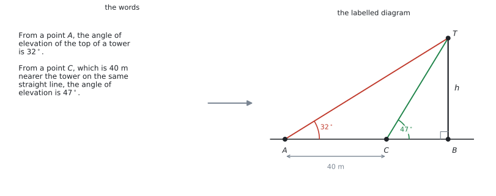
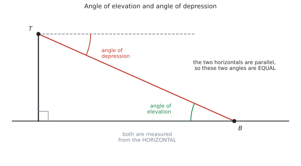
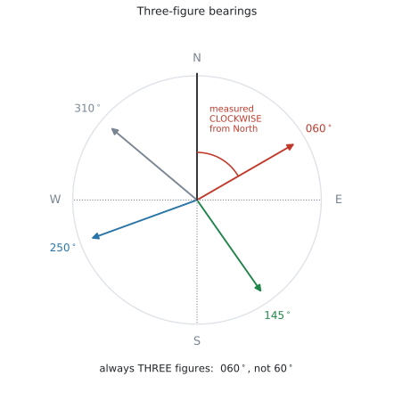
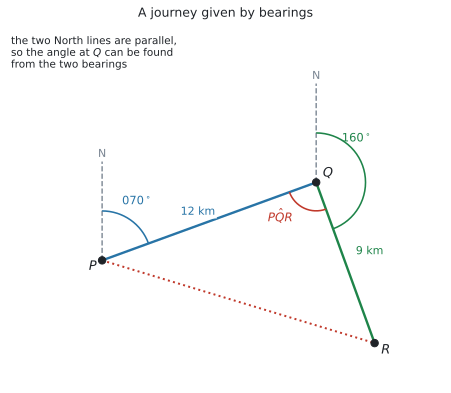
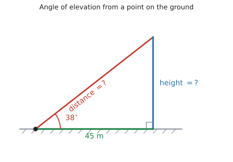
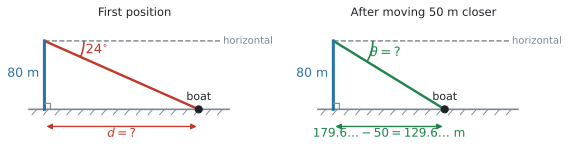
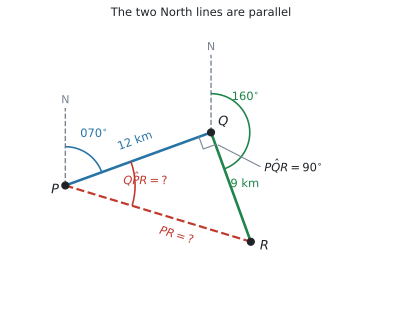
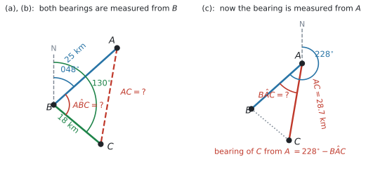
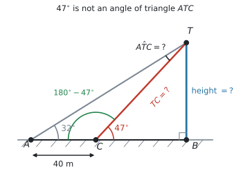

SL 3.3 — Applications: bearings, elevation and depression（三角法の応用 — 方位角・仰角・俯角）
- 文章から、ラベルの付いた図を自分でかける（この項目の中心です）。
- angle of elevation と angle of depression の意味が分かり、図にかける。
- 「\(A\) から \(B\) を見下ろす角」と「\(B\) から \(A\) を見上げる角」が等しい理由を説明できる。
- three-figure bearing（3桁の方位角）を読み書きできる。
- 方位角から、三角形の中の角を求められる。
- SL 3.2 の道具（Pythagoras・SOH-CAH-TOA・sine rule・cosine rule）を、文章題で使い分けられる。
公式集の Topic 3 の欄は、3.1、3.2、3.4 だけです。3.3 の欄はありません。
この項目で使う式は、すべて SL 3.2 のものです。
\[ \frac{a}{\sin A} = \frac{b}{\sin B} = \frac{c}{\sin C} \]
\[ c^{2} = a^{2} + b^{2} - 2ab\cos C, \qquad A = \frac{1}{2}ab\sin C \]
新しく覚えることは、式ではありません。 この項目は、文章を図に直す練習です。
シラバスの Content 欄が including Pythagoras’ theorem と名指ししていますが、公式集には印刷されていません。
\[ \sin\theta = \frac{\text{opp}}{\text{hyp}}, \qquad \cos\theta = \frac{\text{adj}}{\text{hyp}}, \qquad \tan\theta = \frac{\text{opp}}{\text{adj}}, \qquad a^{2} + b^{2} = c^{2} \]
SL 3.2 と同じで、この4つは覚えておく必要があります。
Topic 3 の3項目とも同じです。方位角は度で表します。
ctrl + doc → Document Settings → Angle: DegreeThe idea
1. この項目の中心は「図をかくこと」です
シラバスの Content 欄に、はっきり書かれています。
Construction of labelled diagrams from written statements.
図をかくこと自体が、シラバスの項目になっています。ここまで名指しされているのは、この項目だけです。

手順は4つです
| やること | |
|---|---|
| 1 | 出てくる点に名前を付ける（\(A\)、\(B\)、\(T\) など） |
| 2 | 形をかく（三角形か、三角形が2つか） |
| 3 | 分かっている長さを全部書き込む |
| 4 | 分かっている角を全部書き込む |
この4つが終わってから、はじめて式を選びます。
図をかいてから式を立てると、どの道具を使うかが自然に決まります。
図は、式を選ぶための、そして読みまちがいを防ぐための、大事な途中過程です。答案用紙に消さずに残しておいてください。問題文が図やラベルを求めている場合は、必要な情報を答案に残します。
「頭の中でやる」と、どの角がどの辺の向かいなのかを取り違えやすくなります。
2. angle of elevation と angle of depression

| English | 日本語 | どこからどこへの角か |
|---|---|---|
| angle of elevation | 仰角（ぎょうかく） | 水平線から見上げる角 |
| angle of depression | 俯角（ふかく） | 水平線から見下ろす角 |
ここが、この項目で一番多い誤りです。
縦の線（垂直）からではありません。 図 2 で、俯角は \(T\) を通る水平の点線から測っています。
垂直から測ってしまうと、答えが \(90^\circ\) からの引き算ぶんだけずれます。
見下ろす角と見上げる角は、等しくなります
図 2 で、\(T\) から \(B\) を見下ろす角と、\(B\) から \(T\) を見上げる角は同じ大きさです。
理由は、2本の水平線が平行だからです。平行線に1本の直線（\(TB\)）が交わっているので、錯角（alternate angles）が等しくなります。
Write down the angle of elevation of the top of the cliff from the boat. のような設問が、そのまま出ます。
計算はいりません。 「俯角と同じ」と分かっていれば、書き写すだけです。
理由を書けと言われたら、こう書きます。
試験ではこう書く
The two horizontal lines are parallel, so the angle of elevation and the angle of depression are alternate angles and are therefore equal.
（\(2\) 本の水平線は平行なので、仰角と俯角は錯角であり、したがって等しい、という意味です。）
3. bearing（方位角）
シラバスの Guidance 欄に、こうあります。
Contexts may include use of bearings.

bearing には、守るべき約束が3つあります。
| 約束 | |
|---|---|
| 1 | 北（North）から測る |
| 2 | 時計回りに測る |
| 3 | \(3\) 桁で書く（\(060^\circ\) であって \(60^\circ\) ではない） |
これが three-figure bearing（3桁の方位角）という言い方の意味です。
\(8^\circ\) 東寄りの北なら \(008^\circ\)、真西は \(270^\circ\)、\(60^\circ\) なら \(060^\circ\) と書きます。
\(0\) を先頭に足すだけです。試験では必ず \(3\) 桁表記を使う習慣を付けてください。
back bearing（逆向きの方位角）
\(A\) から見た \(B\) の方位角が分かっているとき、\(B\) から見た \(A\) の方位角は、\(180^\circ\) 足すか引くかで出ます。
| もとの方位角 \(\theta\) | やること | 例 |
|---|---|---|
| \(0^\circ \leq \theta < 180^\circ\) | \(+180^\circ\) | \(073^\circ \to 253^\circ\) |
| \(180^\circ \leq \theta < 360^\circ\) | \(-180^\circ\) | \(215^\circ \to 035^\circ\)、\(180^\circ \to 000^\circ\) |
答えが \(000^\circ\) から \(359^\circ\) のあいだに収まるほうを選ぶ、と覚えると迷いません。\(180^\circ\) のときは、足すと \(360^\circ\) ではみ出すので、引いて \(000^\circ\) です。
4. 方位角から、三角形の角を出す
方位角の問題は、「三角形の中の角がいくつか」が分かれば、あとは SL 3.2 と同じです。

図 4 は、\(P\) から \(070^\circ\) の方向へ \(12\) km 進んで \(Q\)、そこから \(160^\circ\) の方向へ \(9\) km 進んで \(R\) に着く航路です。
三角形 \(PQR\) の、\(Q\) での角を出してみます。
- \(Q\) から \(P\) を見た方位角は、\(P\) から \(Q\) を見た \(070^\circ\) の back bearing で \(070^\circ + 180^\circ = 250^\circ\)
- \(Q\) から \(R\) を見た方位角は \(160^\circ\)
- \(Q\) での角は、その差
\[ P\hat{Q}R = 250^\circ - 160^\circ = 90^\circ \]
図の中に North の線を、点ごとにかき込んでください。 すべて縦向きの平行線です。
平行だから、ある点で分かった角を、別の点に移せます。 これが方位角の問題の全部です。
North の線をかかずに角を推測すると、まず合いません。
5. 使う道具は SL 3.2 と同じです
角が出てしまえば、あとは SL 3.2 の使い分けそのままです。
| 場面 | 使う道具 |
|---|---|
| 直角がある | Pythagoras、SOH-CAH-TOA |
| 辺とその向かいの角がそろっている | sine rule |
| そろっていない（2辺と挟角／3辺） | cosine rule |
| 面積を聞かれた | \(\dfrac{1}{2}ab\sin C\) |
この項目に新しい公式はありません。 難しいのは、文章を図にするところまでです。
Why it works
ここでは、なぜ俯角と仰角が等しいのかだけを説明します。
図 2 を見てください。\(T\) を通る水平線と、\(B\) を通る水平線（地面）は、どちらも水平です。ですから 2本は平行です。
この平行な2本の直線を、\(TB\) という1本の直線が横切っています。中学校で習った錯角の関係です。
\[ \text{（$T$ での俯角）} = \text{（$B$ での仰角）} \]
方位角でも、まったく同じことが起きています。どの点でかいた North の線も、すべて平行です。だから、\(P\) で測った \(070^\circ\) を \(Q\) に移すことができるのです。
「平行だから角を移せる」という1つの考え方が、この項目全体を支えています。
Worked examples
問題文は英語です。意味が理解できなかったら、問題文の下の「日本語訳」を開いてください。解説は日本語です。
例題 1 A vertical tower stands on horizontal ground. From a point on the ground 45 m from the foot of the tower, the angle of elevation of the top of the tower is \(38^\circ\).
(a) Find the height of the tower, correct to three significant figures.
(b) Find the distance from the point to the top of the tower, correct to three significant figures.
日本語訳
垂直な塔が水平な地面に立っています。塔の足元から \(45\) m 離れた地面の点から、塔の頂上の仰角は \(38^\circ\) です。
(a) 塔の高さを有効数字3桁で求めなさい。
(b) その点から塔の頂上までの距離を、有効数字3桁で求めなさい。
まず図をかきます。 塔が垂直、地面が水平なので、足元が直角です。

- \(45\) m は、角のとなり（adjacent）
- 塔の高さは、角の向かい（opposite）
- 頂上までの距離は、斜辺（hypotenuse）
(a) opp と adj なので TOA、\(\tan\) です。
\[ \tan 38^\circ = \frac{h}{45} \ \Rightarrow \ h = 45\tan 38^\circ = 35.157\ldots \]
有効数字3桁で \(35.2\) m です。
(b) adj と hyp なので CAH、\(\cos\) です。
\[ \cos 38^\circ = \frac{45}{d} \ \Rightarrow \ d = \frac{45}{\cos 38^\circ} = 57.105\ldots \]
有効数字3桁で \(57.1\) m です。
検算。 Pythagoras でも出せます。\(\sqrt{45^{2} + 35.157^{2}} = 57.10\) ✓
\(\sqrt{45^{2} + h^{2}}\) でも出せますが、それだと (a) を間違えたときに (b) も落とします。
\(\cos\) を使えば、与えられた \(45\) と \(38^\circ\) だけで済みます。使えるときは、元の数だけで解いてください。
(a) \(\tan 38^\circ = \dfrac{h}{45}\), so \(h = 45\tan 38^\circ = 35.2\) m (3 s.f.)
(b) \(\cos 38^\circ = \dfrac{45}{d}\), so \(d = \dfrac{45}{\cos 38^\circ} = 57.1\) m (3 s.f.)
例題 2 A cliff is 80 m high. From the top of the cliff, the angle of depression of a boat at sea is \(24^\circ\).
(a) Write down the angle of elevation of the top of the cliff from the boat.
(b) Find the horizontal distance from the boat to the foot of the cliff, correct to three significant figures.
(c) The boat then moves 50 m closer to the cliff. Find the new angle of depression, correct to three significant figures.
日本語訳
崖の高さは \(80\) m です。崖の上から、海上の船の俯角は \(24^\circ\) です。
(a) 船から見た崖の頂上の仰角を書きなさい。
(b) 船から崖の足元までの水平距離を、有効数字3桁で求めなさい。
(c) そのあと船は崖に \(50\) m 近づきます。新しい俯角を有効数字3桁で求めなさい。

(a) Write down なので、計算はいりません。錯角で等しいので
\[ 24^\circ \]
(b) 船から見上げた三角形で考えます。\(80\) が opposite、求める水平距離が adjacent なので \(\tan\) です。
\[ \tan 24^\circ = \frac{80}{d} \ \Rightarrow \ d = \frac{80}{\tan 24^\circ} = 179.68\ldots \]
有効数字3桁で \(180\) m です。
\(\tan\) の式で、求めたいものが分母にあります。 そのときは、\(d = \dfrac{80}{\tan 24^\circ}\) とひっくり返してください。
(c) \(50\) m 近づいたので、新しい水平距離は
\[ 179.68\ldots - 50 = 129.68\ldots \]
ここで \(180 - 50 = 130\) としないでください。 (b) の丸めていない値を使います。
\[ \tan\theta = \frac{80}{129.68\ldots} = 0.61690\ldots \]
\[ \theta = \tan^{-1}(0.61690\ldots) = 31.669\ldots^\circ \]
有効数字3桁で \(31.7^\circ\) です。
検算。 近づいたので、見下ろす角は大きくなるはずです。\(24^\circ \to 31.7^\circ\) ✓
(a) \(24^\circ\)
(b) \(\tan 24^\circ = \dfrac{80}{d}\), so \(d = \dfrac{80}{\tan 24^\circ} = 180\) m (3 s.f.)
(c) New distance \(= 179.6\ldots - 50 = 129.6\ldots\) m
\(\tan\theta = \dfrac{80}{129.6\ldots}\), so \(\theta = 31.7^\circ\) (3 s.f.)
例題 3 A ship sails from \(P\) on a bearing of \(070^\circ\) for 12 km to \(Q\). It then sails on a bearing of \(160^\circ\) for 9 km to \(R\).
(a) Show that \(P\hat{Q}R = 90^\circ\).
(b) Find the distance \(PR\).
(c) Find the bearing of \(R\) from \(P\), correct to the nearest degree.
日本語訳
船が \(P\) から方位角 \(070^\circ\) の向きに \(12\) km 進んで \(Q\) に着きます。そこから方位角 \(160^\circ\) の向きに \(9\) km 進んで \(R\) に着きます。
(a) \(P\hat{Q}R = 90^\circ\) であることを示しなさい。
(b) 距離 \(PR\) を求めなさい。
(c) \(P\) から見た \(R\) の方位角を、最も近い整数度で求めなさい。
まず図をかいて、\(P\) と \(Q\) に North の線を入れます。

(a) Show that なので、途中を全部書きます。
\(Q\) から \(P\) を見た方位角は、back bearing です。
\[ 070^\circ + 180^\circ = 250^\circ \]
\(Q\) から \(R\) を見た方位角は \(160^\circ\) です。\(Q\) での角は、この2つの差です。
\[ P\hat{Q}R = 250^\circ - 160^\circ = 90^\circ \]
(b) \(Q\) が直角なので、Pythagoras が使えます。
\[ PR = \sqrt{12^{2} + 9^{2}} = \sqrt{225} = 15 \]
\(15\) km です。\(9\)、\(12\)、\(15\) は \(3\)、\(4\)、\(5\) の \(3\) 倍です。
(c) 求めるのは \(P\) から見た \(R\) の方位角です。\(P\) の North から時計回りに測ります。
\(P\) から \(Q\) の方位角が \(070^\circ\) なので、そこに角 \(Q\hat{P}R\) を足します。
三角形 \(PQR\) で、\(P\) から見て \(QR = 9\) が opposite、\(PQ = 12\) が adjacent なので
\[ \tan(Q\hat{P}R) = \frac{9}{12} = 0.75 \ \Rightarrow \ Q\hat{P}R = 36.869\ldots^\circ \]
\[ \text{bearing of } R \text{ from } P = 070^\circ + 36.869\ldots^\circ = 106.869\ldots^\circ \]
最も近い整数度で \(107^\circ\) です。
\(R\) は \(Q\) より東寄り・南寄りにあるので、\(P\) から見ると \(070^\circ\) より時計回りに進んだ向きです。だから足します。
必ず図を見て決めてください。 公式はありません。
(a) The bearing of \(P\) from \(Q\) is \(070^\circ + 180^\circ = 250^\circ\).
\(P\hat{Q}R = 250^\circ - 160^\circ = 90^\circ\)
(b) \(PR = \sqrt{12^{2} + 9^{2}} = 15\) km
(c) \(\tan(Q\hat{P}R) = \dfrac{9}{12}\), so \(Q\hat{P}R = 36.86\ldots^\circ\)
Bearing of \(R\) from \(P\) \(= 070^\circ + 36.86\ldots^\circ = 107^\circ\) (nearest degree)
例題 4 From a town \(B\), town \(A\) is on a bearing of \(048^\circ\) at a distance of 25 km. From the same town \(B\), town \(C\) is on a bearing of \(130^\circ\) at a distance of 18 km.
(a) Find the size of \(A\hat{B}C\).
(b) Find the distance \(AC\), correct to three significant figures.
(c) Find the bearing of \(C\) from \(A\), correct to the nearest degree.
日本語訳
町 \(B\) から見て、町 \(A\) は方位角 \(048^\circ\)、距離 \(25\) km のところにあります。同じ町 \(B\) から見て、町 \(C\) は方位角 \(130^\circ\)、距離 \(18\) km のところにあります。
(a) \(A\hat{B}C\) の大きさを求めなさい。
(b) 距離 \(AC\) を有効数字3桁で求めなさい。
(c) \(A\) から見た \(C\) の方位角を、最も近い整数度で求めなさい。

(a) どちらの方位角も、\(B\) から測っています。 ですから \(B\) の North の線が1本あればよく、角はその差です。
\[ A\hat{B}C = 130^\circ - 048^\circ = 82^\circ \]
back bearing は不要です。 前の例題との違いに注意してください。
(b) \(A\hat{B}C\) は \(BA\) と \(BC\) にはさまれた角です。ですから cosine rule です。
\[ AC^{2} = 25^{2} + 18^{2} - 2(25)(18)\cos 82^\circ \]
\[ AC^{2} = 949 - 125.25\ldots = 823.74\ldots \]
\[ AC = \sqrt{823.74\ldots} = 28.700\ldots \]
有効数字3桁で \(28.7\) km です。
(c) \(A\) の North の線から測ります。まず、\(A\) から見た \(B\) の方位角を出します。
\[ 048^\circ + 180^\circ = 228^\circ \]
次に、三角形の中の角 \(B\hat{A}C\) を出します。\(AC\) が分かったので、sine rule が使えます。
\[ \frac{\sin(B\hat{A}C)}{18} = \frac{\sin 82^\circ}{28.700\ldots} \]
\[ \sin(B\hat{A}C) = \frac{18\sin 82^\circ}{28.700\ldots} = 0.62105\ldots \]
\[ B\hat{A}C = 38.393\ldots^\circ \]
図を見ると、\(C\) は \(A\) から見て \(B\) より反時計回りの向きにあります。ですから引きます。
\[ 228^\circ - 38.393\ldots^\circ = 189.60\ldots^\circ \]
最も近い整数度で \(190^\circ\) です。
(a) \(A\hat{B}C = 130^\circ - 048^\circ = 82^\circ\)
(b) \(AC^{2} = 25^{2} + 18^{2} - 2(25)(18)\cos 82^\circ = 823.7\ldots\), so \(AC = 28.7\) km (3 s.f.)
(c) Bearing of \(B\) from \(A\) \(= 048^\circ + 180^\circ = 228^\circ\)
\(\dfrac{\sin(B\hat{A}C)}{18} = \dfrac{\sin 82^\circ}{28.70\ldots}\), so \(B\hat{A}C = 38.39\ldots^\circ\)
Bearing of \(C\) from \(A\) \(= 228^\circ - 38.39\ldots^\circ = 190^\circ\) (nearest degree)
例題 5 A vertical tower \(TB\) stands on horizontal ground. From a point \(A\) on the ground, the angle of elevation of the top \(T\) is \(32^\circ\). From a point \(C\), which is 40 m nearer the tower and on the same straight line as \(A\) and \(B\), the angle of elevation of \(T\) is \(47^\circ\).
(a) Find the size of \(A\hat{T}C\).
(b) Find the length of \(TC\), correct to three significant figures.
(c) Find the height of the tower, correct to three significant figures.
日本語訳
垂直な塔 \(TB\) が水平な地面に立っています。地面の点 \(A\) から、頂上 \(T\) の仰角は \(32^\circ\) です。\(A\) と \(B\) と同じ直線上にあり、塔に \(40\) m 近い点 \(C\) からは、\(T\) の仰角は \(47^\circ\) です。
(a) \(A\hat{T}C\) の大きさを求めなさい。
(b) \(TC\) の長さを有効数字3桁で求めなさい。
(c) 塔の高さを有効数字3桁で求めなさい。
この形は、AI SL でくり返し出ます。 図 1 の右がその図です。

(a) \(A\)、\(C\)、\(B\) はこの順に一直線上にあります。\(T\hat{C}B = 47^\circ\) なので、そのとなりの角は
\[ T\hat{C}A = 180^\circ - 47^\circ = 133^\circ \]
三角形 \(ATC\) の内角の和から
\[ A\hat{T}C = 180^\circ - 32^\circ - 133^\circ = 15^\circ \]
\(47^\circ\) をそのまま三角形 \(ATC\) に使ってはいけません。 \(47^\circ\) は \(C\) から塔のほうを見上げた角で、三角形 \(ATC\) の中の角ではありません。
一直線上の \(180^\circ\) から引く、この一手が要ります。
(b) 三角形 \(ATC\) で、\(AC = 40\) とその向かいの \(A\hat{T}C = 15^\circ\) が pair です。求めたい \(TC\) の向かいの \(\hat{A} = 32^\circ\) も分かっています。ですから sine rule です。
\[ \frac{TC}{\sin 32^\circ} = \frac{40}{\sin 15^\circ} \]
\[ TC = \frac{40\sin 32^\circ}{\sin 15^\circ} = 81.898\ldots \]
有効数字3桁で \(81.9\) m です。
(c) 三角形 \(TCB\) は直角三角形です（塔が垂直なので \(B\) が直角）。\(TC\) が斜辺、高さが \(47^\circ\) の向かいなので SOH、\(\sin\) です。
\[ h = TC \times \sin 47^\circ = 81.898\ldots \times \sin 47^\circ = 59.896\ldots \]
有効数字3桁で \(59.9\) m です。
検算。 \(\dfrac{h}{\tan 32^\circ} - \dfrac{h}{\tan 47^\circ} = 95.85 - 55.85 = 40.0\) ✓ ちょうど \(40\) m 離れています。
(a) \(T\hat{C}A = 180^\circ - 47^\circ = 133^\circ\), so \(A\hat{T}C = 180^\circ - 32^\circ - 133^\circ = 15^\circ\)
(b) \(\dfrac{TC}{\sin 32^\circ} = \dfrac{40}{\sin 15^\circ}\), so \(TC = 81.9\) m (3 s.f.)
(c) \(h = TC\sin 47^\circ = 81.89\ldots \times \sin 47^\circ = 59.9\) m (3 s.f.)
Common errors
シラバスが Construction of labelled diagrams from written statements と名指ししている項目です。
図をかくのは準備ではなく、この項目そのものです。点・長さ・角を全部書き込んでから式を選んでください。
どちらも水平線から測ります。
垂直から測ると、答えが \(90^\circ\) からの引き算ぶんだけずれます。図に水平の点線をかき込むと、この誤りは起きません。
\(60^\circ\) ではなく \(060^\circ\)、\(8^\circ\) ではなく \(008^\circ\) です。
計算が合っていても、書き方でつまずくことがあります。 試験では必ず \(3\) 桁で書く習慣を付けてください。
方位角の問題では、出てくる点すべてに North の線をかいてください。
平行な North の線があってはじめて、角を別の点へ移せます。線がないと、足すのか引くのかも決まりません。
例 5 の \(47^\circ\) のように、三角形の外にある角をそのまま使ってしまう誤りです。
一直線上なら \(180^\circ\) から引いてください。図の上で、その角がどの三角形の中にあるかを確かめる習慣を付けてください。
\(179.68\ldots\) を \(180\) にしてから \(50\) を引くと、そのあとの角がずれます。
丸めるのは、答えを書く最後の1回だけです。
correct to the nearest degree と指定されていたら、\(106.87^\circ\) ではなく \(107^\circ\) です。
方位角は、3桁の整数度で答えるのが基本です。
Using your GDC (TI-Nspire CX II)
1. 角の設定を確かめる
ctrl + doc → Document Settings → Angle: Degree2. 電卓は「数を出す道具」です
この項目で、電卓が助けてくれるのは最後の計算だけです。
1. 紙に図をかく（点・長さ・角）
2. どの三角形を使うか決める
3. どの式（Pythagoras / SOH-CAH-TOA / sine rule / cosine rule）か決める
4. ここで電卓1 と 2 を飛ばすと、電卓は助けてくれません。
3. 1行で入れて、丸めない
45 * tan(38) → 35.1578...
80 / tan(24) → 179.6829...
40 * sin(32) / sin(15) → 81.8980...
√(25^2 + 18^2 - 2*25*18*cos(82)) → 28.7009...出た値をそのまま次に使いたいときは、ctrl + var で変数に入れてください（SL 2.6）。
4. 方位角の足し引きは、暗算より画面で
70 + tan⁻¹(9/12) → 106.8698...
228 - 38.3931 → 189.6069...\(0\) より小さくなったら \(+360\)、\(360\) を超えたら \(-360\) をしてください。方位角は \(000^\circ\) から \(359^\circ\) の範囲で書きます。
5. 図は紙にかきます
Geometry 機能は Press-to-Test で制限があります。この項目の図は、必ず紙にかいてください。
図は式を選ぶための大事な途中過程なので、消さずに残しておいてください。
Exercises
各問題に、折りたたみが3つ付いています。日本語訳、解答例（答案用紙に書くべきこと。英語です）、解説（なぜそうなるか。日本語です）。
まず自分で解いて、次に解答例と見くらべてください。解説は、合わなかったときだけ開けば十分です。
1 A kite is flying on a straight string of length 60 m. The string makes an angle of \(52^\circ\) with the horizontal ground.
(a) Find the height of the kite above the ground, correct to three significant figures.
(b) Find the horizontal distance from the kite to the person holding the string, correct to three significant figures.
日本語訳
たこが、長さ \(60\) m のまっすぐな糸で飛んでいます。糸は水平な地面と \(52^\circ\) の角をなしています。
(a) 地面からのたこの高さを、有効数字3桁で求めなさい。
(b) たこから糸を持っている人までの水平距離を、有効数字3桁で求めなさい。
(a) \(h = 60\sin 52^\circ = 47.3\) m (3 s.f.)
(b) \(d = 60\cos 52^\circ = 36.9\) m (3 s.f.)
糸が hypotenuse です。高さが opposite、水平距離が adjacent です。
(a) は SOH（\(\sin\)）、(b) は CAH（\(\cos\)）。どちらも斜辺 \(60\) を使うので、掛け算になります。
検算：\(47.3^{2} + 36.9^{2} = 2237 + 1362 = 3599 \approx 60^{2}\) ✓
2 From the top of a building 45 m high, the angle of depression of a car on the road below is \(28^\circ\).
(a) Write down the angle of elevation of the top of the building from the car.
(b) Find the distance from the car to the foot of the building, correct to three significant figures.
日本語訳
高さ \(45\) m の建物の上から、下の道路にある車の俯角は \(28^\circ\) です。
(a) 車から見た建物の頂上の仰角を書きなさい。
(b) 車から建物の足元までの距離を、有効数字3桁で求めなさい。
(a) \(28^\circ\)
(b) \(\tan 28^\circ = \dfrac{45}{d}\), so \(d = \dfrac{45}{\tan 28^\circ} = 84.6\) m (3 s.f.)
(a) は Write down なので計算はいりません。錯角で等しいからです。
(b) 車から見上げる三角形で、\(45\) が opposite、\(d\) が adjacent。\(\tan\) の式で \(d\) が分母に来るので、ひっくり返して \(d = \dfrac{45}{\tan 28^\circ}\) とします。
\(28^\circ\) は \(45^\circ\) より小さいので、水平距離は高さより長いはずです。\(84.6 > 45\) ✓
3 Write each of the following directions as a three-figure bearing.
(a) \(8^\circ\) east of north.
(b) Due west.
(c) South-east.
日本語訳
次のそれぞれの向きを、3桁の方位角で書きなさい。
(a) 北から東へ \(8^\circ\)。
(b) 真西。
(c) 南東。
(a) \(008^\circ\)
(b) \(270^\circ\)
(c) \(135^\circ\)
北から時計回りに測ります。
(a) 北が \(000^\circ\)、そこから東へ \(8^\circ\) なので \(008^\circ\)。\(8^\circ\) と書かないでください。
(b) 北 → 東 \(090^\circ\) → 南 \(180^\circ\) → 西 \(270^\circ\)。
(c) 南東は、東 \(090^\circ\) と南 \(180^\circ\) のちょうど真ん中で \(135^\circ\) です。
4 Find the back bearing in each case.
(a) The bearing of \(B\) from \(A\) is \(073^\circ\). Find the bearing of \(A\) from \(B\).
(b) The bearing of \(Q\) from \(P\) is \(215^\circ\). Find the bearing of \(P\) from \(Q\).
日本語訳
それぞれの場合について、逆向きの方位角を求めなさい。
(a) \(A\) から見た \(B\) の方位角は \(073^\circ\) です。\(B\) から見た \(A\) の方位角を求めなさい。
(b) \(P\) から見た \(Q\) の方位角は \(215^\circ\) です。\(Q\) から見た \(P\) の方位角を求めなさい。
(a) \(073^\circ + 180^\circ = 253^\circ\)
(b) \(215^\circ - 180^\circ = 035^\circ\)
\(180^\circ\) より小さければ足し、\(180^\circ\) 以上なら引きます（表 4）。
答えが \(000^\circ\) から \(359^\circ\) に収まるほうを選ぶ、と考えても同じです。\(215 + 180 = 395\) は範囲の外なので、引くほうが正しいと分かります。
(b) の答えは \(35^\circ\) ではなく \(035^\circ\) です。
5 A boat sails from \(A\) on a bearing of \(040^\circ\) for 15 km to \(B\). It then sails on a bearing of \(130^\circ\) for 20 km to \(C\).
(a) Show that \(A\hat{B}C = 90^\circ\).
(b) Find the distance \(AC\).
(c) Find the bearing of \(C\) from \(A\), correct to the nearest degree.
日本語訳
ボートが \(A\) から方位角 \(040^\circ\) の向きに \(15\) km 進んで \(B\) に着きます。そこから方位角 \(130^\circ\) の向きに \(20\) km 進んで \(C\) に着きます。
(a) \(A\hat{B}C = 90^\circ\) であることを示しなさい。
(b) 距離 \(AC\) を求めなさい。
(c) \(A\) から見た \(C\) の方位角を、最も近い整数度で求めなさい。
(a) The bearing of \(A\) from \(B\) is \(040^\circ + 180^\circ = 220^\circ\).
\(A\hat{B}C = 220^\circ - 130^\circ = 90^\circ\)
(b) \(AC = \sqrt{15^{2} + 20^{2}} = \sqrt{625} = 25\) km
(c) \(\tan(B\hat{A}C) = \dfrac{20}{15}\), so \(B\hat{A}C = 53.13\ldots^\circ\)
Bearing of \(C\) from \(A\) \(= 040^\circ + 53.13\ldots^\circ = 093^\circ\) (nearest degree)
\(A\) と \(B\) の両方に North の線をかいてください。
(a) 方位角が違う点から測られているので、back bearing が要ります。
(b) \(15\)、\(20\)、\(25\) は \(3\)、\(4\)、\(5\) の \(5\) 倍です。
(c) \(C\) は \(A\) から見て \(B\) より時計回りの向きなので、足します。答えは \(93^\circ\) ではなく \(093^\circ\) と3桁で書いてください。
6 From a port \(P\), ship \(A\) sails 30 km on a bearing of \(055^\circ\). From the same port, ship \(B\) sails 22 km on a bearing of \(128^\circ\).
(a) Find the size of \(A\hat{P}B\).
(b) Find the distance between the two ships, correct to three significant figures.
日本語訳
港 \(P\) から、船 \(A\) は方位角 \(055^\circ\) の向きに \(30\) km 進みます。同じ港から、船 \(B\) は方位角 \(128^\circ\) の向きに \(22\) km 進みます。
(a) \(A\hat{P}B\) の大きさを求めなさい。
(b) \(2\) 隻の船のあいだの距離を、有効数字3桁で求めなさい。
(a) \(A\hat{P}B = 128^\circ - 055^\circ = 73^\circ\)
(b) \(AB^{2} = 30^{2} + 22^{2} - 2(30)(22)\cos 73^\circ = 998.0\ldots\), so \(AB = 31.6\) km (3 s.f.)
どちらの方位角も、同じ港 \(P\) から測っています。 ですから back bearing は要りません。North の線は1本で足り、角はその差です。
(b) は「\(2\) 辺とはさまれた角」なので cosine rule。\(\sqrt{\ }\) を忘れないでください。
演習5 との違いを見くらべてください。「同じ点から」か「違う点から」か、それだけです。
7 A vertical mast \(TB\) stands on horizontal ground. From a point \(P\), the angle of elevation of the top \(T\) is \(25^\circ\). From a point \(Q\), which is 30 m nearer the mast and on the same straight line as \(P\) and \(B\), the angle of elevation of \(T\) is \(41^\circ\).
(a) Find the size of \(P\hat{T}Q\).
(b) Find the height of the mast, correct to three significant figures.
日本語訳
垂直な柱 \(TB\) が水平な地面に立っています。点 \(P\) から、頂上 \(T\) の仰角は \(25^\circ\) です。柱に \(30\) m 近く、\(P\) と \(B\) と同じ直線上にある点 \(Q\) からは、\(T\) の仰角は \(41^\circ\) です。
(a) \(P\hat{T}Q\) の大きさを求めなさい。
(b) 柱の高さを有効数字3桁で求めなさい。
(a) \(P\hat{Q}T = 180^\circ - 41^\circ = 139^\circ\), so \(P\hat{T}Q = 180^\circ - 25^\circ - 139^\circ = 16^\circ\)
(b) \(\dfrac{TQ}{\sin 25^\circ} = \dfrac{30}{\sin 16^\circ}\), so \(TQ = 45.99\ldots\) m
\(h = TQ\sin 41^\circ = 30.2\) m (3 s.f.)
例 5 とまったく同じ形です。数だけが違います。
(a) \(41^\circ\) は三角形の外の角です。一直線上の \(180^\circ\) から引いて \(139^\circ\) にしてから使います。
(b) sine rule で \(TQ\) を出し、そのあと直角三角形で \(h = TQ\sin 41^\circ\)。\(2\) 段階です。
検算：\(\dfrac{30.18}{\tan 25^\circ} - \dfrac{30.18}{\tan 41^\circ} = 64.7 - 34.7 = 30.0\) ✓
8 An aircraft is flying at a height of 2500 m. The angle of depression of an airport on the ground ahead is \(12^\circ\).
(a) Find the horizontal distance from the aircraft to the airport, in kilometres, correct to three significant figures.
(b) Find the direct distance from the aircraft to the airport, in kilometres, correct to three significant figures.
日本語訳
航空機が高度 \(2500\) m を飛んでいます。前方の地上の空港の俯角は \(12^\circ\) です。
(a) 航空機から空港までの水平距離を、キロメートルで有効数字3桁で求めなさい。
(b) 航空機から空港までの直線距離を、キロメートルで有効数字3桁で求めなさい。
(a) \(\tan 12^\circ = \dfrac{2500}{d}\), so \(d = \dfrac{2500}{\tan 12^\circ} = 11761\ldots\) m \(= 11.8\) km (3 s.f.)
(b) \(\sin 12^\circ = \dfrac{2500}{s}\), so \(s = \dfrac{2500}{\sin 12^\circ} = 12024\ldots\) m \(= 12.0\) km (3 s.f.)
単位に注意してください。 高度は m、答えは km と指定されています。最後に \(1000\) で割ります。
(a) は adjacent を求めるので \(\tan\)、(b) は hypotenuse を求めるので \(\sin\) です。
(b) の答えは \(12\) ではなく \(12.0\) と書いてください。有効数字3桁と指定されているので、\(0\) も書きます。
直線距離は水平距離より長いはずです。\(12.0 > 11.8\) ✓
9 Two lighthouses \(A\) and \(B\) are 12 km apart, with \(B\) due east of \(A\). A ship \(S\) is on a bearing of \(048^\circ\) from \(A\) and on a bearing of \(320^\circ\) from \(B\).
(a) Find the size of \(S\hat{A}B\).
(b) Find the size of \(A\hat{B}S\).
(c) Find the distance \(AS\), correct to three significant figures.
日本語訳
\(2\) つの灯台 \(A\) と \(B\) は \(12\) km 離れていて、\(B\) は \(A\) の真東にあります。船 \(S\) は、\(A\) から見て方位角 \(048^\circ\)、\(B\) から見て方位角 \(320^\circ\) のところにあります。
(a) \(S\hat{A}B\) の大きさを求めなさい。
(b) \(A\hat{B}S\) の大きさを求めなさい。
(c) 距離 \(AS\) を有効数字3桁で求めなさい。
(a) The bearing of \(B\) from \(A\) is \(090^\circ\) (due east), so \(S\hat{A}B = 090^\circ - 048^\circ = 42^\circ\)
(b) The bearing of \(A\) from \(B\) is \(270^\circ\) (due west), so \(A\hat{B}S = 320^\circ - 270^\circ = 50^\circ\)
(c) \(A\hat{S}B = 180^\circ - 42^\circ - 50^\circ = 88^\circ\)
\(\dfrac{AS}{\sin 50^\circ} = \dfrac{12}{\sin 88^\circ}\), so \(AS = 9.20\) km (3 s.f.)
「真東」「真西」も方位角です。 真東は \(090^\circ\)、真西は \(270^\circ\) です。これが分かれば、(a) も (b) も引き算だけです。
(c) 角が2つ分かり、そのうち1つ（\(88^\circ\)）の向かいの辺 \(AB = 12\) が分かっているので sine rule。
求めたい \(AS\) の向かいは \(A\hat{B}S = 50^\circ\) です。ここを取り違えないでください。図に \(a\)、\(b\)、\(c\) を書き込むと確実です。
10 A surveyor stands at a point \(A\). A tree \(T\) is on a bearing of \(125^\circ\) from \(A\), at a distance of 60 m. A rock \(R\) is on a bearing of \(200^\circ\) from \(A\), at a distance of 45 m.
(a) Find the size of \(T\hat{A}R\).
(b) Find the distance \(TR\), correct to three significant figures.
(c) Find the area of triangle \(TAR\), correct to three significant figures.
日本語訳
測量士が点 \(A\) に立っています。木 \(T\) は \(A\) から方位角 \(125^\circ\)、距離 \(60\) m のところにあります。岩 \(R\) は \(A\) から方位角 \(200^\circ\)、距離 \(45\) m のところにあります。
(a) \(T\hat{A}R\) の大きさを求めなさい。
(b) 距離 \(TR\) を有効数字3桁で求めなさい。
(c) 三角形 \(TAR\) の面積を有効数字3桁で求めなさい。
(a) \(T\hat{A}R = 200^\circ - 125^\circ = 75^\circ\)
(b) \(TR^{2} = 60^{2} + 45^{2} - 2(60)(45)\cos 75^\circ = 4227\ldots\), so \(TR = 65.0\) m (3 s.f.)
(c) Area \(= \dfrac{1}{2}(60)(45)\sin 75^\circ = 1300\) m\(^{2}\) (3 s.f.)
どちらの方位角も \(A\) から測っています。 ですから引くだけで角が出ます（演習6 と同じ形）。
(b) は「\(2\) 辺とはさまれた角」で cosine rule、(c) は同じ \(3\) つで面積の公式です。SL 3.2 で見たとおり、この \(2\) つは必要な材料がまったく同じです。
(c) の \(1303.99\ldots\) は、有効数字3桁で \(1300\) m\(^{2}\) です。\(1304\) と書くと4桁になります。